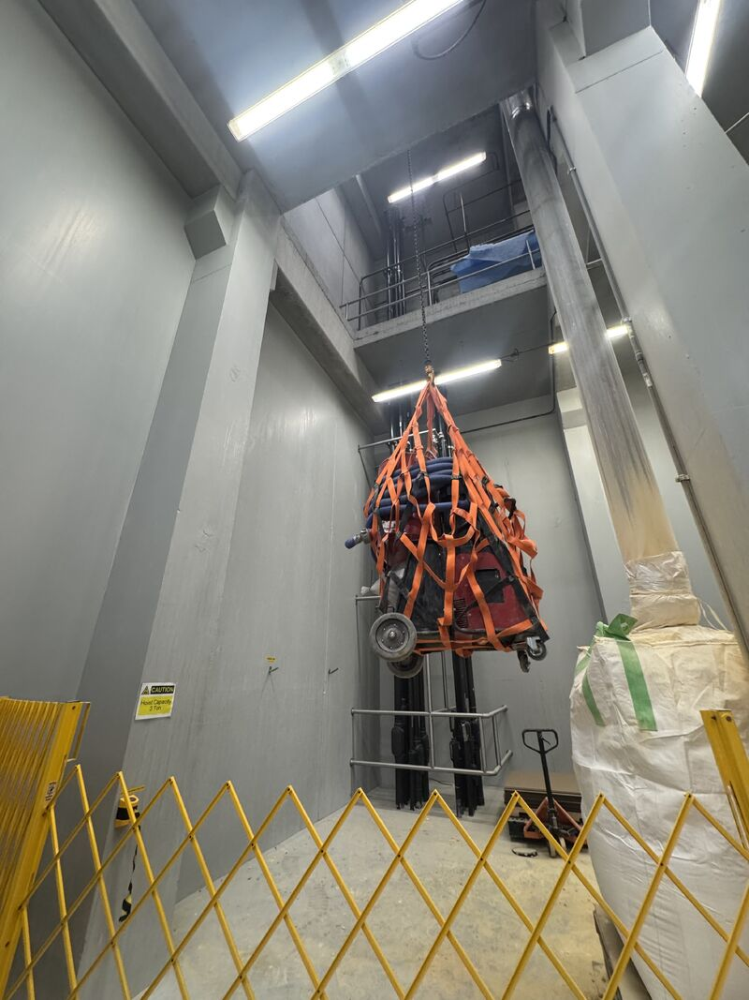
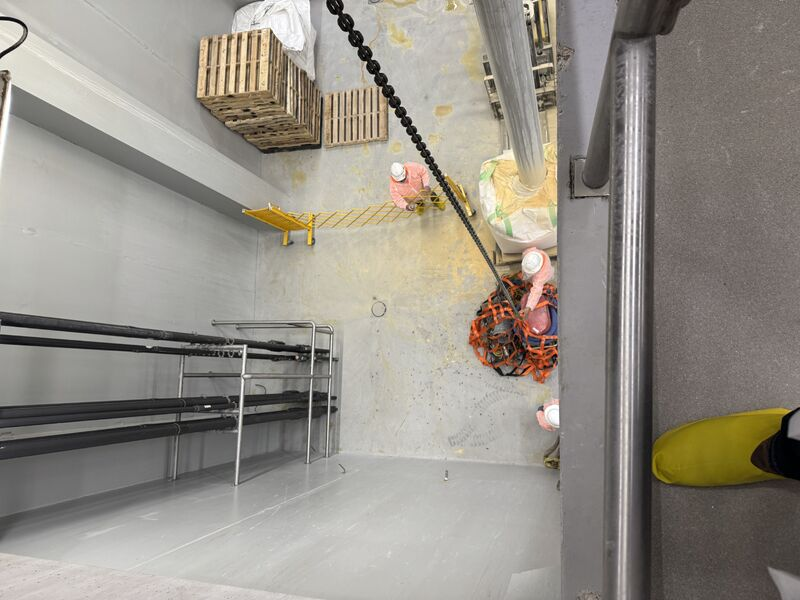
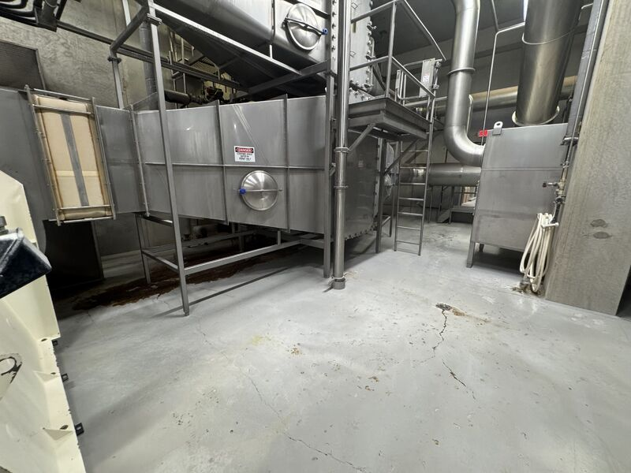
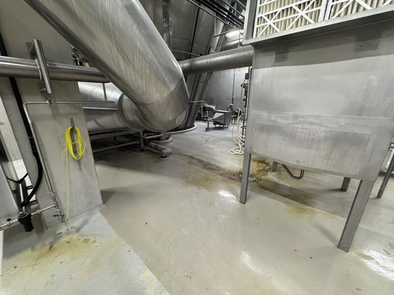
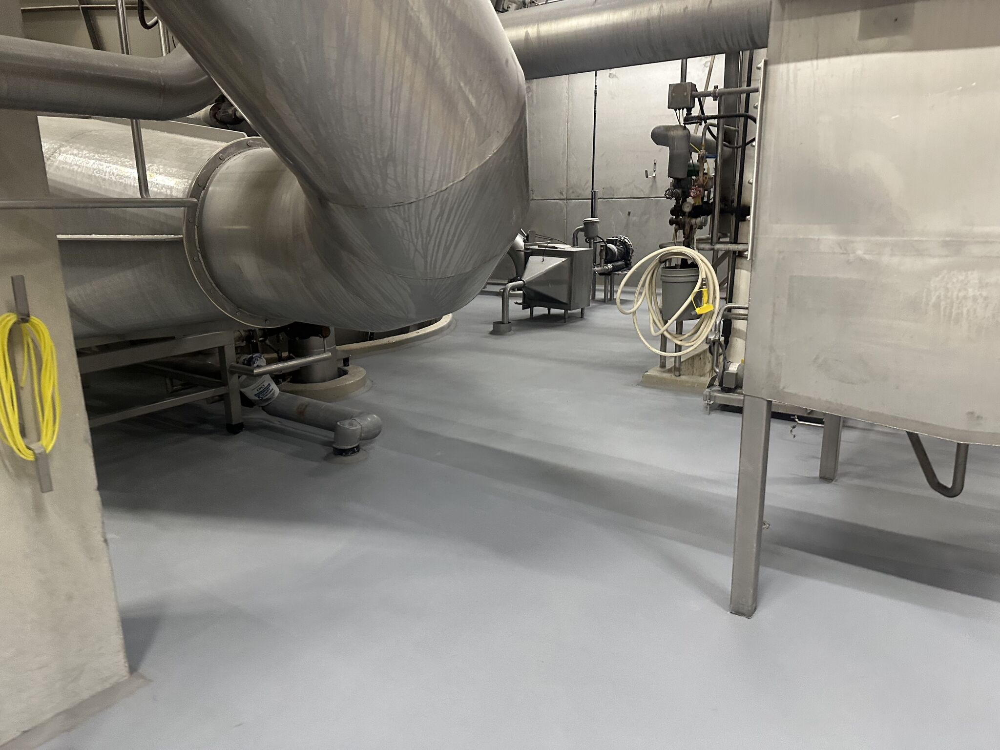
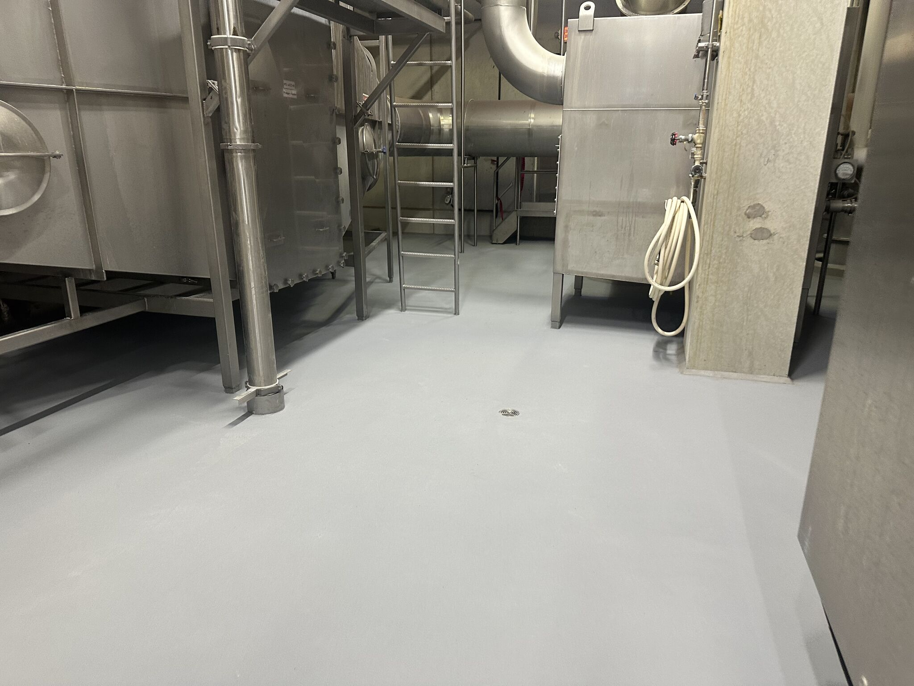

No two plants are ever the same, and that is what keeps this job interesting. Every facility has its own layout, its own challenges, and its own way of testing whether you really know what you are doing. This latest project was a good reminder of that.
The Access Problem
This job was on an elevated floor with no easy way in. No freight elevator. No convenient loading dock. Every bag of material and every piece of equipment had to go up by chain fall. That meant a slow start. Hauling material one hoist at a time takes patience and coordination. You cannot rush it, and you cannot cut corners getting it up there.


But once the crew was set up and the material was in place, they got to work and did not stop. That is how it goes on jobs like this. The setup takes longer than the install, but you plan for it and you push through.
Before: The Existing Floor
This is what they were working with before we came in. Worn, cracked concrete with chemical staining and no protection against the daily washdowns a processing environment demands.

The Result: SaniCrete STX with VR Cove
We laid down SaniCrete STX at 3/8 inch, gray with S-40 quartz. Around the full perimeter, we ran VR cove. The result is a seamless, sealed floor system with integrated curbing that leaves no exposed joints or corners where bacteria can collect.
On an elevated floor, proper cove is even more critical. Water runs to the edges, and if those edges are not sealed with a continuous cove base, you are creating a moisture trap between the floor and the wall. VR cove eliminates that risk.
Image 4 below shows another angle of the existing floor before we started. Look at the staining and wear. Then compare it to the finished result.



The gray color with S-40 quartz gives a clean, professional look while providing the slip resistance you need in a wet processing environment. It is a practical choice that holds up to daily washdowns, chemical exposure, and heavy foot traffic.
Products Used
- SaniCrete STX — 3/8" stainless steel reinforced cementitious urethane, gray with S-40 quartz
- SaniCrete VR — Vertical radius cove base around full perimeter